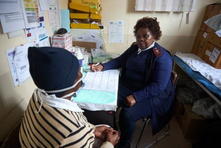
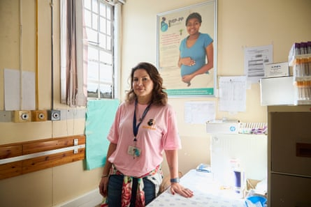
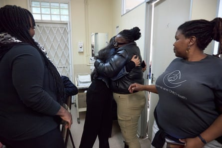
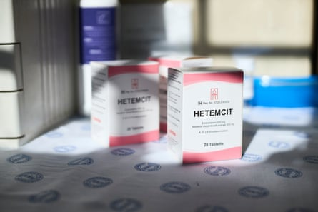
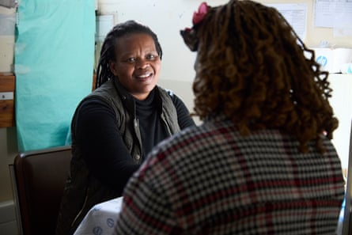
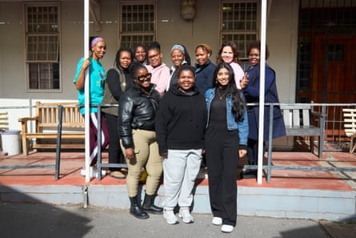

Z ola Madikane* was born HIV positive in 2004. Put on antiretrovirals (ARVs) as a baby, she has been on the life-saving medication ever since and has lived a normal life. No longer. “Now, I have a problem,” she says.
For most of her life her viral load (the amount of HIV in her blood) has been undetectable. “When I went for my February clinic visit, I didn’t get my pills. They told me ‘shortage of staff’ and ‘come back another day’. I came back a few times, but it was the same story.”
Madikane, who is seven months pregnant, took no ARVs in March or April. She finally managed to get a batch in mid-May but by then her viral load was sky high. “It has never been high like this,” she says. “It is too risky for my unborn baby.” The risk of transmitting the virus to her child during delivery or while breastfeeding is much higher if her HIV is detectable.
“My fear is that I will get sick more, I will get other infections like TB. And my fear for my baby is too big,” she adds. “I don’t want my boy to be positive.”
Madikane knows first-hand the mental struggles of growing up with HIV: “At school they teased me,” she says. “They would say, ‘You are positive … Why are you always going to the clinic? Why are you eating pills?’”
Sister Sibongile Mqaba with a patient on the last day of the Scope-PP study at a clinic in Western Cape, South Africa. Several patients are now struggling to get the treatment they need
Sister Sibongile Mqaba, who has worked in the same clinic in Cape Town for 32 years, is hopeful that Madikane will get her viral load down before she delivers. But Madikane is not the only patient struggling to get treatment since the suspension of most Pepfar (President’s Emergency Plan for Aids Relief) funding to South Africa. Since initial cuts in January, US president Donald Trump has made further significant reductions.
South Africa’s health minister, Aaron Motsoaledi, has complicated matters by insisting that the country’s HIV programme is “not collapsing” and assuring the public that there is no shortage of ARVs.
While it appears US funding cuts have not significantly dented ARV supply, Madikane’s story illustrates that access to treatment is about more than pharmaceutical supply. The abrupt stop-work order issued to Anova Health Institute, the largest recipient of Pepfar funding in South Africa, on 25 January meant that her local clinic didn’t have sufficient staff to meet patient demand on the days she visited.
Dr Dvora Joseph Davey, the US epidemiologist in charge of the Scope-PP study
It is not all about ARVs and Pepfar funding, either. Since 2016, Dr Dvora Joseph Davey, a US epidemiologist based in South Africa, has implemented several studies in government clinics in the Klipfontein area of Cape Town, all funded by the US National Institutes of Health (NIH). One study established that PrEP (pre-exposure prophylaxis, medication taken by HIV-negative people to prevent them acquiring HIV during sex) was safe for use by pregnant and breastfeeding women – a global first. Another study, called Scope-PP, which began in 2023, sought to optimise the rollout of PrEP in eight maternity clinics across Cape Town.
On 1 May, Davey was informed that her NIH funding could no longer be given to foreign sub-awards or collaborators outside the US. Friday 30 May was the study’s last day.
The 18 women who were directly employed by the University of Cape Town as counsellors, interviewers, nurses, trainers and data collectors have all lost their jobs. The same is true for at least half of the 224 health workers around Cape Town who Davey’s team had trained to provide PrEP for pregnant and breastfeeding women. “Effective use of PrEP is about far more than simply taking a daily pill,” says Davey. “Counselling, testing and support are all just as important.”
As an associate professor at the University of California, Los Angeles (UCLA), Davey receives funding awards from the NIH. For the past decade she has collaborated with the University of Cape Town via sub-awards, but the Trump administration has put a stop to this. “I have over $300,000 [£222,000] granted to me via UCLA that I cannot get into South Africa,” she says.
It’s a similar story across the country: a Médecins Sans Frontières report shows that in South Africa alone Trump’s funding cuts have put at least 27 HIV trials and 20 TB trials at risk.
South Africa is possibly the most important place in the world for HIV research. Not only does it have more people living with HIV than any other country, but it also has world-class medical infrastructure. “We can do meaningful research in a small community with 1,000 participants,” says Davey. “To achieve the same outcomes in the US we would need 100,000 participants and millions and millions of dollars.” Recent analysis shows that every $1 of NIH funding generates approximately $2.56 of economic activity.
Staff say goodbye on the last day of the Scope-PP study at a clinic in Western Cape, South Africa on 30 May. Eighteen women lost their jobs when the study ended
Then there is the impact on participants’ lives. In the absence of intervention, the rate of mother-to-child transmission of HIV during birth and while breastfeeding can range from 15 to 45%. With the inclusion of antiretroviral drugs during and after pregnancy the rate is less than 2%.
South Africa had achieved a significant reduction in mother-to-child HIV transmission, with the rate dropping to 2.6% in 2024 from almost 15% in 2008. “We were well on track to eliminate infant HIV,” says Davey. “But without PrEP, ART [antiretroviral treatment] and other interventions, we will see rates of mother-to-child transmission increase.”
One study of 50,461 infants born to HIV-positive mothers in the Western Cape, where Cape Town is located, found that among pregnant women with elevated viral load (not on ART, or recently acquired HIV), 18% of infants were born with HIV. “We don’t want to go back to those days,” Davey says.
In all of 2024, three babies were born with HIV in the clinics in Davey’s study. In the first five months of this year, even before cuts have fully taken effect, there have already been three cases.
The antiretroviral treatment Hetemcit is one of those offered in the Scope-PP study, which sought to optimise the rollout of PrEP in eight maternity clinics across Cape Town
What’s more, “closing these trials early violates the ethical standards we work by”, says Davey. “When a patient starts in the study, we promise to provide treatment and counselling until the end of the study. We’ve had to stop our study early and transition people back to the clinic to get their PrEP. And often the clinic doesn’t have the nurses and counsellors or the PrEP.”
One such patient is Vuyisile Ndungane*. She came to the clinic in 2024 during her second pregnancy and was told about PrEP by Lindelwa Dube, a counsellor trained by Davey. “The moment Lindelwa introduced me to PrEP, I decided to use it till I gave birth,” says Ndungane. “She helped me so much.”
As part of the study, Ndungane was given counselling about the importance of knowing her partner’s HIV status and given oral HIV self-tests. “When my baby was four months old, I asked my husband to test,” she says. “He was happy to test, he wanted us to help each other.”
His test came back positive.
Lindelwa Dube holds a counselling session with a participant in the Scope-PP study
“He was sad and surprised and angry,” says Ndungane. “In the beginning I was not OK. I wanted to know the truth. He eventually told me he was busy in the time when I was pregnant. He did not specify exactly, but he became transparent.”
Dube helped Ndungane through this crisis, coaching her on how best to handle the situation and encouraging her and her husband to come into the clinic for counselling. “Most men don’t want to go to the clinic,” says Ndungane. “But the moment he got the counselling from them he realised … ‘I did something wrong … I have to put my family first.’”
He is now on ARVs and his viral load is undetectable.
“Now, I am fine,” says Ndungane, who is still HIV negative. “But without PrEP I would not be fine. I don’t want to lie.”
Ndungane only heard about the PrEP study’s imminent closure on the day the Guardian spoke to her. She remains hopeful that she and her husband will be able to get their medications “for ever”.
The Scope-PP team on the last day of the study, on 30 May. Some fear mortality rates will rise after the study’s closure
Sister Mqaba, who will be losing her job at the end of June, does not share the same optimism. “My fear is mortality is going to be very high,” she says. Mqaba knows what an uncontrolled epidemic looks like, having lived through the late 1990s and early 2000s, when infections were rife and no treatment was available. (Even after ART had been developed and used in the global north, South Africa’s president then, Thabo Mbeki, refused to provide it through the state health system.)
“In the bad days, you could diagnose people just by looking at them,” says Mqaba.
“They looked so sick. Now you don’t see that. But we are going to go back there. We are going to see mothers dying again, when they are pregnant or when they have just given birth. We are going to see babies born HIV positive.”
* Names have been changed